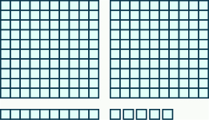
ચિત્રમાં ત્રણ પ્રકારના ભાગ છે. પહેલા ભાગમાં બે ચોરસ છે; દરેકમાં 100 ખંડ છે, 10 ખંડ પહોળાઈમાં અને 10 ખંડ ઊંચાઈમાં. બીજા ભાગમાં 10 ખંડ ધરાવતી એક આડી સળી છે. ત્રીજા ભાગમાં 5 અલગ ખંડ છે.
જો આ પ્રશ્નમાં ભૂલ થઈ હોય, તો ફરી જુઓ: સંદર્ભ fs-id2222880.
જો આ પ્રશ્નમાં ભૂલ થઈ હોય, તો ફરી જુઓ: સંદર્ભ fs-id3202693.
સરવાળાની લખાવટનો ઉપયોગ કરો
સરવાળાની લખાવટ
| ક્રિયા | લખાવટ | પદાવલી | આ રીતે વાંચો | પરિણામ |
|---|---|---|---|---|
| સરવાળો | ત્રણ વત્તા ચાર | આ સંખ્યાઓનો સરવાળો: અને |
- ⓐ
- ⓑ
ઉકેલ
- ⓐ આ પદાવલીમાં ઉમેરવાની સંખ્યાઓ 7 અને 1ને વત્તાનું ચિહ્ન જોડે છે. તેને આપણે સાત વત્તા એકવાંચીએ છીએ. પરિણામ છે સાત અને એકનો સરવાળો.
- ⓑ આ પદાવલીમાં ઉમેરવાની સંખ્યાઓ 12 અને 14ને વત્તાનું ચિહ્ન જોડે છે. તેને આપણે બાર વત્તા ચૌદવાંચીએ છીએ. પરિણામ છે બાર અને ચૌદનો સરવાળો.
- ⓐ
- ⓑ
- ⓐ આઠ વત્તા ચાર; આઠ અને ચારનો સરવાળો
- ⓑ અઢાર વત્તા અગિયાર; અઢાર અને અગિયારનો સરવાળો
- ⓐ
- ⓑ
- ⓐ એકવીસ વત્તા સોળ; એકવીસ અને સોળનો સરવાળો
- ⓑ એકસો વત્તા બસો; એકસો અને બસોનો સરવાળો
પૂર્ણ સંખ્યાઓનો સરવાળો નમૂના દ્વારા દર્શાવો
| પહેલી સંખ્યાને 3 ખંડથી દર્શાવીને શરૂઆત કરીએ. |  સફેદ પૃષ્ઠભૂમિ પર અંક 3ની ઉપર ત્રણ ખાલી ચોરસ દેખાય છે. |
| પછી બીજી સંખ્યાને 4 ખંડથી દર્શાવીએ. | 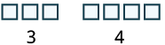 ખાલી ચોરસના બે જૂથ છે. પહેલા જૂથમાં ત્રણ ચોરસ અને તેની નીચે “3” છે. બીજા જૂથમાં ચાર ચોરસ અને તેની નીચે “4” છે. તે મૂળભૂત ગણતરી અથવા જૂથ બનાવવાનું દર્શાવે છે. |
| ખંડોની કુલ સંખ્યા ગણો. | સાત ખાલી ચોરસની હરોળની નીચે અંક “7” લખેલો છે. |
ઉકેલ
| પહેલી સંખ્યાને 2 ખંડથી દર્શાવો. | 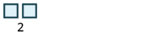 સંખ્યા 2ની ઉપર આછા વાદળી રંગની કિનારીવાળા બે ચોરસ છે; તે બે વસ્તુની ગણતરી અથવા પસંદગી દર્શાવે છે. |
| બીજી સંખ્યાને 6 ખંડથી દર્શાવો. | 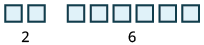 ચિત્રમાં સંખ્યા 2ની ઉપર બે આછા વાદળી ચોરસ અને સંખ્યા 6ની ઉપર છ આછા વાદળી ચોરસ છે. |
| ખંડોની કુલ સંખ્યા ગણો. | ચિત્રમાં સંખ્યા 8ની ઉપર આઠ આછા વાદળી ચોરસ છે. કુલ ખંડ છે, તેથી |
ચિત્રમાં ત્રણ રાખોડી ચોરસ છે, પછી થોડી જગ્યા અને પછી બીજા છ રાખોડી ચોરસ છે. તેની નીચે “3 + 6 = 9” સમીકરણ ચોરસનો સરવાળો દર્શાવે છે.

ચિત્રમાં રાખોડી ચોરસથી 5 + 1નો સરવાળો દર્શાવેલો છે.
ઉકેલ
| ઉમેરવાની દરેક સંખ્યા 10 કરતાં નાની છે, તેથી એકમના ખંડો વાપરી શકીએ છીએ. | |
| પહેલી સંખ્યાને 5 ખંડથી દર્શાવો. |  ઘેરી કિનારીવાળા પાંચ ખાલી આછા રાખોડી ચોરસ આડી હરોળમાં છે. સફેદ પૃષ્ઠભૂમિ પર પાંચ ચોરસની વચ્ચે નીચે સંખ્યા “5” લખેલી છે, જે તેમની સંખ્યા દર્શાવે છે. |
| બીજી સંખ્યાને 8 ખંડથી દર્શાવો. |  ચિત્રમાં કિનારીવાળા 5 રાખોડી ચોરસની નીચે સંખ્યા 5 છે. કિનારીવાળા આઠ રાખોડી ચોરસના જૂથની નીચે સંખ્યા 8 છે. |
| પરિણામ ગણો. 10 કરતાં વધુ ખંડ છે, તેથી 10 એકમના ખંડના બદલામાં 1 દશકની સળી લઈએ છીએ. | 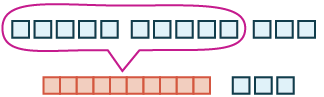 આ ચિત્રમાં કિનારીવાળા 5 રાખોડી ચોરસનાં બે જૂથ અને કિનારીવાળા 3 રાખોડી ચોરસનું એક જૂથ છે. 5 ચોરસનાં બંને જૂથને વર્તુળમાં દર્શાવી તેમની નીચે 10 લાલ ખંડના એક જૂથમાં ફેરવેલાં છે. તેની બાજુમાં ત્રણ રાખોડી ચોરસનું જૂથ છે. |
| હવે આપણી પાસે 1 દશક અને 3 એકમ છે, એટલે 13. | 5 + 8 = 13 |

ચિત્રમાં ખંડોથી 5 + 7નો સરવાળો દર્શાવેલો છે.

ચિત્રમાં ખંડોથી 6 + 8નો સરવાળો દર્શાવેલો છે.
ઉકેલ
| 17ને દર્શાવો. | 1 દશક અને 7 એકમ |  આ ચિત્રમાં ડાબે 10 ખંડનું જૂથ અને જમણે 7 છૂટા ખંડનું જૂથ છે. |
| 26ને દર્શાવો. | 2 દશક અને 6 એકમ |  આ ચિત્રમાં ડાબે કિનારીવાળા 10 ખંડનાં બે જૂથ અને જમણે 6 છૂટા ખંડ છે. |
| ભેગાં કરો. | 3 દશક અને 13 એકમ |  ડાબે દસ ખંડની ત્રણ સળીઓ છે. જમણે તેર એકમના ખંડ છે; તેમાંના દસ લાલ અને ત્રણ આછા વાદળી છે. આ 3 દશક અને 13 એકમ દર્શાવે છે. |
| 10 એકમના બદલામાં 1 દશક લો. | 4 દશક અને 3 એકમ |
 ચિત્રમાં ચોરસની હરોળો છે: દસ આછા વાદળી ચોરસની ત્રણ હરોળ અને તેમની નીચે દસ લાલ ચોરસની એક હરોળ છે. જમણે બીજા ત્રણ આછા વાદળી ચોરસ આડી હરોળમાં છે. |
| આપણે આ દર્શાવ્યું છે: |
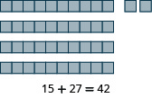
આધાર-દસના ખંડોથી 15 + 27 = 42 દર્શાવ્યું છે; તેમાં ચાર દશક અને બે એકમ છે.

આધાર-દસના ખંડોથી 16 + 29 = 45 દર્શાવેલું ચિત્ર. દસ ખંડની ચાર હરોળ 40 અને પાંચ છૂટા ખંડ 5 દર્શાવે છે, એટલે કુલ 45. ખંડોની નીચે સરવાળો લખેલો છે.
નમૂના વિના પૂર્ણ સંખ્યાઓનો સરવાળો કરો
| + | 0 | 1 | 2 | 3 | 4 | 5 | 6 | 7 | 8 | 9 |
|---|---|---|---|---|---|---|---|---|---|---|
| 0 | 0 | 1 | 2 | 3 | 4 | 5 | 6 | 7 | 8 | 9 |
| 1 | 1 | 2 | 3 | 4 | 5 | 6 | 7 | 8 | 9 | 10 |
| 2 | 2 | 3 | 4 | 5 | 6 | 7 | 8 | 9 | 10 | 11 |
| 3 | 3 | 4 | 5 | 6 | 7 | 8 | 9 | 10 | 11 | 12 |
| 4 | 4 | 5 | 6 | 7 | 8 | 9 | 10 | 11 | 12 | 13 |
| 5 | 5 | 6 | 7 | 8 | 9 | 10 | 11 | 12 | 13 | 14 |
| 6 | 6 | 7 | 8 | 9 | 10 | 11 | 12 | 13 | 14 | 15 |
| 7 | 7 | 8 | 9 | 10 | 11 | 12 | 13 | 14 | 15 | 16 |
| 8 | 8 | 9 | 10 | 11 | 12 | 13 | 14 | 15 | 16 | 17 |
| 9 | 9 | 10 | 11 | 12 | 13 | 14 | 15 | 16 | 17 | 18 |
સરવાળાનો તટસ્થતાનો ગુણધર્મ
- ⓐ
- ⓑ
ઉકેલ
| ⓐ ઉમેરવાની પહેલી સંખ્યા શૂન્ય છે. કોઈપણ સંખ્યા અને શૂન્યનો સરવાળો તે સંખ્યા જ થાય છે. | |
| ⓑ ઉમેરવાની બીજી સંખ્યા શૂન્ય છે. કોઈપણ સંખ્યા અને શૂન્યનો સરવાળો તે સંખ્યા જ થાય છે. |
- ⓐ
- ⓑ
- ⓐ
- ⓑ
- ⓐ
- ⓑ
- ⓐ
- ⓑ
સરવાળાનો ક્રમવિનિમયનો ગુણધર્મ
- ⓐ
- ⓑ
ઉકેલ
-
ⓐ સરવાળો કરો. -
ⓑ સરવાળો કરો.
ઉકેલ
| એકમ અને દશકના અંકો એકની નીચે એક આવે તેમ સંખ્યાઓ લખો. | |
| પછી દરેક સ્થાનકિંમતના અંકો ઉમેરો. એકમનો સરવાળો કરો: દશકનો સરવાળો કરો: |
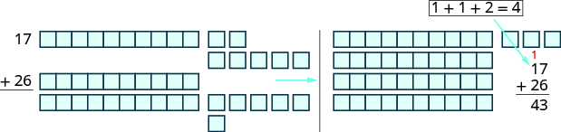
ચિત્રમાં વસ્તુઓનાં બે જૂથ છે. ડાબા જૂથમાં 1 આડી સળીમાં 10 ખંડ અને તેની સાથે 7 છૂટા ખંડ છે; પછી 2 આડી સળીમાં દરેકમાં 10 ખંડ અને તેમની સાથે 6 છૂટા ખંડ છે. આ જૂથની ડાબે “17 + 26 =” લખેલું છે. જમણા જૂથમાં બે પ્રકારના ભાગ છે: ચાર આડી સળી, જેમાં દરેકમાં 10 ખંડ છે, અને પછી 3 છૂટા ખંડ. આ જૂથ માટે “17 + 26 = 43” લખેલું છે.
પૂર્ણ સંખ્યાઓનો સરવાળો કરો.
- સરખી સ્થાનકિંમતના અંકો એકની નીચે એક આવે તેમ સંખ્યાઓ લખો.
- દરેક સ્થાનકિંમતના અંકો ઉમેરો. એકમના સ્થાનથી શરૂ કરીને જમણેથી ડાબે જાઓ. કોઈ સ્થાનકિંમતનો સરવાળો કરતાં વધુ હોય તો આગળના સ્થાને લઈ જાઓ.
- જમણેથી ડાબે દરેક સ્થાનકિંમતનો સરવાળો કરતા જાઓ અને જરૂર પડે ત્યારે આગળના સ્થાને લઈ જાઓ.
ઉકેલ
| અંકો એકની નીચે એક આવે તેમ સંખ્યાઓ લખો. | |
| દરેક સ્થાનના અંકો ઉમેરો. એકમનો સરવાળો કરો: |
|
| સરવાળામાં એકમના સ્થાને લખો. આ દશકને દશકના સ્થાને ઉમેરો. |
|
| હવે દશકનો સરવાળો કરો: સરવાળામાં 11 લખો. |
ઉકેલ
| અંકો એકની નીચે એક આવે તેમ સંખ્યાઓ લખો. | 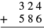 સરવાળાનો પ્રશ્ન, જેમાં 324ને 586માં ઉમેરવામાં આવે છે. |
| દરેક સ્થાનકિંમતના અંકો ઉમેરો. એકમનો સરવાળો કરો: સરવાળામાં એકમના સ્થાને લખો અને દશકને દશકના સ્થાને લઈ જાઓ. |
 સરવાળાનો પ્રશ્ન, જેમાં 324ને 586માં ઉમેરવામાં આવે છે. આ પહેલા પગલામાં બંને સંખ્યાના જમણી બાજુના અંકો ઉમેરાય છે: 4 + 6 = 10. 1ને 2ની ઉપર અને 0ને નીચે લખેલો છે. |
| દશકનો સરવાળો કરો: સરવાળામાં દશકના સ્થાને લખો અને સોને સોના સ્થાને લઈ જાઓ. |
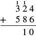 324 અને 586નો ઊભી ગોઠવણીમાં સરવાળો. 324ના સોના અંક 3ની ઉપર અને દશકના અંક 2ની ઉપર આગળના સ્થાને લઈ જવાયેલો 1 લખેલો છે. રેખાની નીચે દશક અને એકમના સ્થાને આંશિક સરવાળો 10 છે. |
| સોનો સરવાળો કરો: સરવાળામાં સોના સ્થાને લખો. |
 324 અને 586નો ઊભી ગોઠવણીમાં સરવાળો 910 છે. 324ના સોના અંક 3ની ઉપર અને દશકના અંક 2ની ઉપર આગળના સ્થાને લઈ જવાયેલો 1 લખેલો છે. આ અંકો આગળના સ્થાને લઈ જવાનું દર્શાવે છે. |
ઉકેલ
| અંકો એકની નીચે એક આવે તેમ સંખ્યાઓ લખો. | |
| દરેક સ્થાનકિંમતના અંકો ઉમેરો. | |
| એકમનો સરવાળો કરો: સરવાળામાં એકમના સ્થાને લખો અને દશકને દશકના સ્થાને લઈ જાઓ. |
|
| દશકનો સરવાળો કરો: આ દશકના સ્થાને લખો અને સોને સોના સ્થાને લઈ જાઓ. |
|
| સોનો સરવાળો કરો: આ સોના સ્થાને લખો અને હજારને હજારના સ્થાને લઈ જાઓ. |
|
| હજારનો સરવાળો કરો: . સરવાળામાં હજારના સ્થાને લખો. |
ઉકેલ
| સરખી સ્થાનકિંમતના અંકો એકની નીચે એક આવે તેમ સંખ્યાઓ લખો. | |
| દરેક સ્થાનકિંમતના અંકો ઉમેરો. | |
| એકમનો સરવાળો કરો: સરવાળામાં એકમના સ્થાને લખો અને દશકના સ્થાને લઈ જાઓ. |
|
| દશકનો સરવાળો કરો: આ દશકના સ્થાને લખો અને સોના સ્થાને લઈ જાઓ. |
|
| સોનો સરવાળો કરો: આ સોના સ્થાને લખો અને હજારના સ્થાને લઈ જાઓ. |
|
| હજારનો સરવાળો કરો: . આ હજારના સ્થાને લખો અને દસ હજારના સ્થાને લઈ જાઓ. |
|
| દસ હજારનો સરવાળો કરો: . સરવાળામાં દસ હજારના સ્થાને લખો. |
શબ્દોમાં આપેલી વાતને ગણિતની લખાવટમાં ફેરવો
| ક્રિયા | શબ્દો | ઉદાહરણ | પદાવલી |
|---|---|---|---|
| સરવાળો | વત્તા સરવાળો માં ઉમેરો: જેટલો વધારો આ સંખ્યામાં: કુલ સરવાળો ઉમેરો આ સંખ્યામાં: |
વત્તા આ સંખ્યાઓનો સરવાળો: અને માં ઉમેરો: જેટલો વધારો આ સંખ્યામાં: આ સંખ્યાઓનો કુલ સરવાળો: અને ઉમેરો આ સંખ્યામાં: |
ઉકેલ
| આ સંખ્યાઓનો સરવાળો: અને | |
| ગણિતની લખાવટમાં ફેરવો. | |
| સરવાળો કરો. | |
| આ સંખ્યાઓનો સરવાળો, અને માટે, થાય છે |
ઉકેલ
| માં ઉમેરો: | |
| ગણિતની લખાવટમાં ફેરવો. | |
| સરવાળો કરો. | |
| તેથી માં વધારો કરવાથી મળે છે |
વ્યવહારુ પ્રશ્નોમાં પૂર્ણ સંખ્યાઓનો સરવાળો કરો
ઉકેલ
| શબ્દોમાં લખો. | કસોટીઓના ગુણનો સરવાળો |
| ગણિતની લખાવટમાં ફેરવો. | |
| પછી સરવાળો કરીને સરળ કરીએ. | |
| ઘણી સંખ્યાઓ હોવાથી તેમને ઊભી ગોઠવીને લખીશું. | |
| પ્રશ્નનો જવાબ આપવા વાક્ય લખો. | હાઓને કુલ 432 ગુણ મળ્યા. |
આંગણાની પરિમિતિનું ચિત્ર. તેની છ બાજુ છે. ડાબી બાજુ 4 ફૂટ, ઉપરની બાજુ 9 ફૂટ, ટૂંકી જમણી બાજુ 2 ફૂટ, ત્યાંથી ડાબે જતી બાજુ 3 ફૂટ, પછી નીચે જતી બાજુ 2 ફૂટ અને છેલ્લે પાયાની બાજુ 6 ફૂટ દર્શાવેલી છે.
ઉકેલ
| પરિમિતિ શોધવાનું પૂછ્યું છે. | |
| શબ્દોમાં લખો. | બાજુઓની લંબાઈનો સરવાળો |
| ગણિતની લખાવટમાં ફેરવો. | |
| સરવાળો કરીને સરળ કરો. | |
| પ્રશ્નનો જવાબ આપવા વાક્ય લખો. | |
| આપણે ફૂટમાં આપેલી લંબાઈ ઉમેરી છે, તેથી સરવાળો છે ફૂટ. | આંગણાની પરિમિતિ છે ફૂટ. |

આ ચિત્રમાં 8 બાજુ છે. ડાબી પહેલી બાજુ 4 ઇંચ, ઉપરની બાજુ 2ની લંબાઈ 9 ઇંચ, જમણી બાજુ 3ની લંબાઈ 4 ઇંચ, બાજુ 4ની લંબાઈ 3 ઇંચ, બાજુ 5ની લંબાઈ 2 ઇંચ, બાજુ 6ની લંબાઈ 3 ઇંચ, બાજુ 7ની લંબાઈ 2 ઇંચ અને બાજુ 8ની લંબાઈ 3 ઇંચ છે.
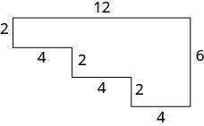
આ ચિત્રમાં 8 બાજુ છે. ઘડિયાળના કાંટાની દિશામાં જતાં પહેલી બાજુ 2 ઇંચ, બાજુ 2ની લંબાઈ 12 ઇંચ, બાજુ 3ની લંબાઈ 6 ઇંચ, બાજુ 4ની લંબાઈ 4 ઇંચ, બાજુ 5ની લંબાઈ 2 ઇંચ, બાજુ 6ની લંબાઈ 4 ઇંચ, બાજુ 7ની લંબાઈ 2 ઇંચ અને બાજુ 8ની લંબાઈ 4 ઇંચ છે.
વધારાનાં ઑનલાઇન સંસાધનો જુઓ
મુખ્ય સંકલ્પનાઓ
- સરવાળાની લખાવટ સરવાળો દર્શાવવા પ્રતીકો અને શબ્દો વાપરી શકીએ છીએ.
ક્રિયા લખાવટ પદાવલી આ રીતે વાંચો પરિણામ સરવાળો ત્રણ વત્તા ચાર આ સંખ્યાઓનો સરવાળો: અને - સરવાળાનો તટસ્થતાનો ગુણધર્મ
- કોઈપણ સંખ્યા અને નો સરવાળો તે સંખ્યા પોતે જ થાય છે.
- સરવાળાનો ક્રમવિનિમયનો ગુણધર્મ
- ઉમેરવાની સંખ્યાઓ અને નો ક્રમ બદલવાથી તેમનો સરવાળો બદલાતો નથી. .
- પૂર્ણ સંખ્યાઓનો સરવાળો કરો.
- સરખી સ્થાનકિંમતના અંકો એકની નીચે એક આવે તેમ સંખ્યાઓ લખો.
- દરેક સ્થાનકિંમતના અંકો ઉમેરો. એકમના સ્થાનથી શરૂ કરીને જમણેથી ડાબે જાઓ. કોઈ સ્થાનકિંમતનો સરવાળો 9 કરતાં વધુ હોય તો આગળના સ્થાને લઈ જાઓ.
- જમણેથી ડાબે દરેક સ્થાનકિંમતનો સરવાળો કરતા જાઓ અને જરૂર પડે ત્યારે આગળના સ્થાને લઈ જાઓ.
અભ્યાસથી નિપુણતા
ચિત્રમાં ખંડોથી પૂર્ણ સંખ્યાઓનો સરવાળો 2 + 4 દર્શાવેલો છે.
ચિત્રમાં ખંડોથી પૂર્ણ સંખ્યાઓનો સરવાળો 8 + 4 દર્શાવેલો છે.
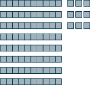
ચિત્રમાં ખંડોથી પૂર્ણ સંખ્યાઓનો સરવાળો 14 + 75 દર્શાવેલો છે.
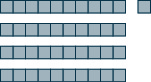
ચિત્રમાં ખંડોથી પૂર્ણ સંખ્યાઓનો સરવાળો 16 + 25 દર્શાવેલો છે.
![11 સ્તંભ અને 11 હરોળનું કોષ્ટક. પહેલી હરોળ અને પહેલા સ્તંભનાં ખાનાં બીજા ખાનાં કરતાં ઘેરાં છે. પહેલા સ્તંભનાં મૂલ્યો “+; 0; 1; 2; 3; 4; 5; 6; 7; 8; 9” છે. બીજા સ્તંભનાં મૂલ્યો “0; 0; 1; ખાલી; 3; 4; 5; 6; ખાલી; 8; 9” છે. ત્રીજા સ્તંભનાં મૂલ્યો “1; 1; 2; 3; ખાલી; 5; 6; 7; ખાલી; 9; 10” છે. ચોથા સ્તંભનાં મૂલ્યો “2; 2; 3; 4; 5; ખાલી; 7; 8; 9; ખાલી; 11” છે. પાંચમા સ્તંભનાં મૂલ્યો “3; ખાલી; 4; 5; ખાલી; ખાલી; 8; ખાલી; 10; 11; ખાલી” છે. છઠ્ઠા સ્તંભનાં મૂલ્યો “4; 4; ખાલી; 6;7; 8; ખાલી; 10; ખાલી; ખાલી; 13” છે. સાતમા સ્તંભનાં મૂલ્યો “5; 5; ખાલી; ખાલી; 8; 9; ખાલી; ખાલી; 12; ખાલી; 14” છે. આઠમા સ્તંભનાં મૂલ્યો “6; 6; 7; 8; ખાલી; ખાલી; 11; ખાલી; ખાલી; 14; ખાલી” છે. નવમા સ્તંભનાં મૂલ્યો “7; 7; 8; ખાલી; 10; 11; ખાલી; 13; ખાલી; ખાલી; ખાલી” છે. દસમા સ્તંભનાં મૂલ્યો “8; ખાલી; 9; ખાલી; ખાલી; 12; 13; ખાલી; 15; 16; 17” છે. અગિયારમા સ્તંભનાં મૂલ્યો “9; 9; ખાલી; 11; 12; ખાલી; ખાલી; 15; 16; ખાલી; ખાલી” છે.](media/CNX_BMath_Figure_01_02_216.jpg)
11 સ્તંભ અને 11 હરોળનું કોષ્ટક. પહેલી હરોળ અને પહેલા સ્તંભનાં ખાનાં બીજા ખાનાં કરતાં ઘેરાં છે. પહેલા સ્તંભનાં મૂલ્યો “+; 0; 1; 2; 3; 4; 5; 6; 7; 8; 9” છે. બીજા સ્તંભનાં મૂલ્યો “0; 0; 1; ખાલી; 3; 4; 5; 6; ખાલી; 8; 9” છે. ત્રીજા સ્તંભનાં મૂલ્યો “1; 1; 2; 3; ખાલી; 5; 6; 7; ખાલી; 9; 10” છે. ચોથા સ્તંભનાં મૂલ્યો “2; 2; 3; 4; 5; ખાલી; 7; 8; 9; ખાલી; 11” છે. પાંચમા સ્તંભનાં મૂલ્યો “3; ખાલી; 4; 5; ખાલી; ખાલી; 8; ખાલી; 10; 11; ખાલી” છે. છઠ્ઠા સ્તંભનાં મૂલ્યો “4; 4; ખાલી; 6;7; 8; ખાલી; 10; ખાલી; ખાલી; 13” છે. સાતમા સ્તંભનાં મૂલ્યો “5; 5; ખાલી; ખાલી; 8; 9; ખાલી; ખાલી; 12; ખાલી; 14” છે. આઠમા સ્તંભનાં મૂલ્યો “6; 6; 7; 8; ખાલી; ખાલી; 11; ખાલી; ખાલી; 14; ખાલી” છે. નવમા સ્તંભનાં મૂલ્યો “7; 7; 8; ખાલી; 10; 11; ખાલી; 13; ખાલી; ખાલી; ખાલી” છે. દસમા સ્તંભનાં મૂલ્યો “8; ખાલી; 9; ખાલી; ખાલી; 12; 13; ખાલી; 15; 16; 17” છે. અગિયારમા સ્તંભનાં મૂલ્યો “9; 9; ખાલી; 11; 12; ખાલી; ખાલી; 15; 16; ખાલી; ખાલી” છે.

11 સ્તંભ અને 11 હરોળનું કોષ્ટક. પહેલી હરોળ અને પહેલા સ્તંભનાં ખાનાં બીજા ખાનાં કરતાં ઘેરાં છે. ખાનાંમાં સંખ્યાઓ અને પ્રશ્નના જવાબો છે.
![11 સ્તંભ અને 11 હરોળનું કોષ્ટક. પહેલી હરોળ અને પહેલા સ્તંભનાં ખાનાં બીજા ખાનાં કરતાં ઘેરાં છે. પહેલા સ્તંભનાં મૂલ્યો “+; 0; 1; 2; 3; 4; 5; 6; 7; 8; 9” છે. બીજા સ્તંભનાં મૂલ્યો “0; 0; 1; 2; ખાલી; 4; 5; ખાલી; 7; 8; ખાલી” છે. ત્રીજા સ્તંભનાં મૂલ્યો “1; 1; 2; ખાલી; 4; 5; 6; ખાલી; 8; 9; ખાલી” છે. ચોથા સ્તંભનાં મૂલ્યો “2; 2; 3; 4; ખાલી; 6; ખાલી; 8; ખાલી; 10; 11” છે. પાંચમા સ્તંભનાં મૂલ્યો “3; 3; ખાલી; ખાલી; 6; 7; 8; 9; 10; ખાલી; 12” છે. છઠ્ઠા સ્તંભનાં મૂલ્યો “4; 4; 5; 6; ખાલી; ખાલી; 9; ખાલી; ખાલી; 12; 13” છે. સાતમા સ્તંભનાં મૂલ્યો “5; ખાલી; 6; 7; ખાલી; ખાલી; ખાલી; ખાલી; 12; ખાલી; ખાલી” છે. આઠમા સ્તંભનાં મૂલ્યો “6; 6; ખાલી; ખાલી; 9; 10; 11; 12; ખાલી; 14; ખાલી” છે. નવમા સ્તંભનાં મૂલ્યો “7; ખાલી; 8; 9; ખાલી; 11; 12; 13; ખાલી; ખાલી; 16” છે. દસમા સ્તંભનાં મૂલ્યો “8; 8; ખાલી; 10; 11; ખાલી; 13; ખાલી; 15; 16; ખાલી” છે. અગિયારમા સ્તંભનાં મૂલ્યો “9; 9; 10; ખાલી; ખાલી; 13; ખાલી; 15; 16; 17; ખાલી” છે.](media/CNX_BMath_Figure_01_02_218.jpg)
11 સ્તંભ અને 11 હરોળનું કોષ્ટક. પહેલી હરોળ અને પહેલા સ્તંભનાં ખાનાં બીજા ખાનાં કરતાં ઘેરાં છે. પહેલા સ્તંભનાં મૂલ્યો “+; 0; 1; 2; 3; 4; 5; 6; 7; 8; 9” છે. બીજા સ્તંભનાં મૂલ્યો “0; 0; 1; 2; ખાલી; 4; 5; ખાલી; 7; 8; ખાલી” છે. ત્રીજા સ્તંભનાં મૂલ્યો “1; 1; 2; ખાલી; 4; 5; 6; ખાલી; 8; 9; ખાલી” છે. ચોથા સ્તંભનાં મૂલ્યો “2; 2; 3; 4; ખાલી; 6; ખાલી; 8; ખાલી; 10; 11” છે. પાંચમા સ્તંભનાં મૂલ્યો “3; 3; ખાલી; ખાલી; 6; 7; 8; 9; 10; ખાલી; 12” છે. છઠ્ઠા સ્તંભનાં મૂલ્યો “4; 4; 5; 6; ખાલી; ખાલી; 9; ખાલી; ખાલી; 12; 13” છે. સાતમા સ્તંભનાં મૂલ્યો “5; ખાલી; 6; 7; ખાલી; ખાલી; ખાલી; ખાલી; 12; ખાલી; ખાલી” છે. આઠમા સ્તંભનાં મૂલ્યો “6; 6; ખાલી; ખાલી; 9; 10; 11; 12; ખાલી; 14; ખાલી” છે. નવમા સ્તંભનાં મૂલ્યો “7; ખાલી; 8; 9; ખાલી; 11; 12; 13; ખાલી; ખાલી; 16” છે. દસમા સ્તંભનાં મૂલ્યો “8; 8; ખાલી; 10; 11; ખાલી; 13; ખાલી; 15; 16; ખાલી” છે. અગિયારમા સ્તંભનાં મૂલ્યો “9; 9; 10; ખાલી; ખાલી; 13; ખાલી; 15; 16; 17; ખાલી” છે.

8 સ્તંભ અને 5 હરોળનું કોષ્ટક. પહેલી હરોળ અને પહેલા સ્તંભનાં ખાનાં બીજા ખાનાં કરતાં ઘેરાં છે. પહેલી હરોળ અને પહેલા સ્તંભ સિવાયનાં બધાં ખાનાં ખાલી છે. પહેલા સ્તંભનાં મૂલ્યો “+; 6; 7; 8; 9” છે. પહેલી હરોળનાં મૂલ્યો “+; 3; 4; 5; 6; 7; 8; 9” છે.

8 સ્તંભ અને 5 હરોળનું કોષ્ટક. પહેલી હરોળ અને પહેલા સ્તંભનાં ખાનાં બીજા ખાનાં કરતાં ઘેરાં છે. ખાનાંમાં સંખ્યાઓ અને પ્રશ્નના જવાબો છે.

કોષ્ટકમાં શીર્ષકનાં ખાનાં સહિત 5 સ્તંભ અને 8 હરોળ છે. પહેલી હરોળનાં મૂલ્યો +, 6, 7, 8, 9 છે. પહેલા સ્તંભનાં મૂલ્યો +, 3, 4, 5, 6, 7, 8, 9 છે. અંદરનાં બધાં જવાબનાં ખાનાં ખાલી છે.

6 સ્તંભ અને 6 હરોળનું કોષ્ટક. પહેલી હરોળ અને પહેલા સ્તંભનાં ખાનાં બીજા ખાનાં કરતાં ઘેરાં છે. પહેલી હરોળ અને પહેલા સ્તંભ સિવાયનાં બધાં ખાનાં ખાલી છે. પહેલી હરોળનાં મૂલ્યો “+; 5; 6; 7; 8; 9” છે. પહેલા સ્તંભનાં મૂલ્યો “+; 5; 6; 7; 8; 9” છે.

6 સ્તંભ અને 6 હરોળનું કોષ્ટક. પહેલી હરોળ અને પહેલા સ્તંભનાં ખાનાં બીજા ખાનાં કરતાં ઘેરાં છે. ખાનાંમાં સંખ્યાઓ અને પ્રશ્નના જવાબો છે.
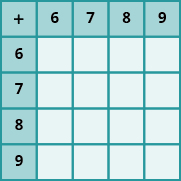
5 સ્તંભ અને 5 હરોળનું કોષ્ટક. પહેલી હરોળ અને પહેલા સ્તંભનાં ખાનાં બીજા ખાનાં કરતાં ઘેરાં છે. પહેલી હરોળ અને પહેલા સ્તંભ સિવાયનાં બધાં ખાનાં ખાલી છે. પહેલી હરોળનાં મૂલ્યો “+; 6; 7; 8; 9” છે. પહેલા સ્તંભનાં મૂલ્યો “+; 6; 7; 8; 9” છે.
- ⓐ
- ⓑ
- ⓐ 13
- ⓑ 13
- ⓐ
- ⓑ
- ⓐ
- ⓑ
- ⓐ
- ⓑ
- ⓐ
- ⓑ
14 ઇંચ, 12 ઇંચ અને 18 ઇંચની બાજુઓ ધરાવતા ત્રિકોણનું ચિત્ર.
12 સેન્ટિમીટરના પાયા, 5 સેન્ટિમીટરની ઊંચાઈ અને 13 સેન્ટિમીટરના ત્રાંસા કર્ણવાળા કાટકોણ ત્રિકોણનું ચિત્ર.
21 મીટર પહોળો અને 7 મીટર ઊંચો લંબચોરસ.
19 ફૂટ પહોળો અને 14 ફૂટ ઊંચો લંબચોરસ.
સમલંબ ચતુષ્કોણ, જેમાં ઉપરની આડી બાજુ 19 યાર્ડ, બંને ત્રાંસી બાજુ 18 યાર્ડ અને નીચેની આડી બાજુ 16 યાર્ડ છે.
સમલંબ ચતુષ્કોણ, જેમાં ઉપરની આડી બાજુ 24 મીટર, બંને ત્રાંસી બાજુ 17 મીટર અને નીચેની આડી બાજુ 29 મીટર છે.
છ બાજુ ધરાવતું લંબચોરસ જેવું ચિત્ર. ઉપરના ડાબા ખૂણેથી પહેલી રેખા 24 ફૂટ જમણે જાય છે. તેના છેડેથી બીજી રેખા 7 ફૂટ નીચે જાય છે. ત્યાંથી ત્રીજી રેખા 19 ફૂટ ડાબે જાય છે. ચોથી રેખા 3 ફૂટ ઉપર, પાંચમી રેખા 5 ફૂટ ડાબે અને છઠ્ઠી રેખા 4 ફૂટ ઉપર જઈ પહેલી રેખાની શરૂઆત સાથે ખૂણે મળે છે.
6 સીધી બાજુ ધરાવતું ચિત્ર. ઉપરના ડાબા ખૂણેથી પહેલી રેખા 25 ઇંચ જમણે જાય છે. તેના છેડેથી બીજી રેખા 10 ઇંચ નીચે જાય છે. ત્યાંથી ત્રીજી રેખા 14 ઇંચ ડાબે જાય છે. ચોથી રેખા 7 ઇંચ ઉપર, પાંચમી રેખા 11 ઇંચ ડાબે અને છઠ્ઠી રેખા ઉપર જઈ પહેલી રેખાની શરૂઆત સાથે ખૂણે મળે છે.
રોજિંદા જીવનમાં ગણિત
રૅન્ચ ડ્રેસિંગ – કૅલરી
નું પીણું – કૅલરી
ફ્રાઇઝનો નાનો ભાગ – કૅલરી
નો ચોકલેટ શેક – કૅલરી
લેખન અભ્યાસ
સ્વમૂલ્યાંકન
| હું આ કરી શકું છું… | વિશ્વાસપૂર્વક | થોડી મદદથી | ના—મને સમજાતું નથી! |
|---|---|---|---|
| સરવાળાની લખાવટનો ઉપયોગ. | |||
| પૂર્ણ સંખ્યાઓનો સરવાળો નમૂના દ્વારા દર્શાવવો. | |||
| નમૂના વિના પૂર્ણ સંખ્યાઓનો સરવાળો. | |||
| શબ્દોમાં આપેલી વાતને ગણિતની લખાવટમાં ફેરવવી. | |||
| વ્યવહારુ પ્રશ્નોમાં પૂર્ણ સંખ્યાઓનો સરવાળો. |
સરવાળાની લખાવટના ઉપયોગથી લઈને પૂર્ણ સંખ્યાઓના વ્યવહારુ ઉપયોગ સુધીનાં સરવાળાનાં કૌશલ્યો તપાસવાનું સ્વમૂલ્યાંકન કોષ્ટક. વિકલ્પો છે: વિશ્વાસપૂર્વક, થોડી મદદથી, અને ના—મને સમજાતું નથી!